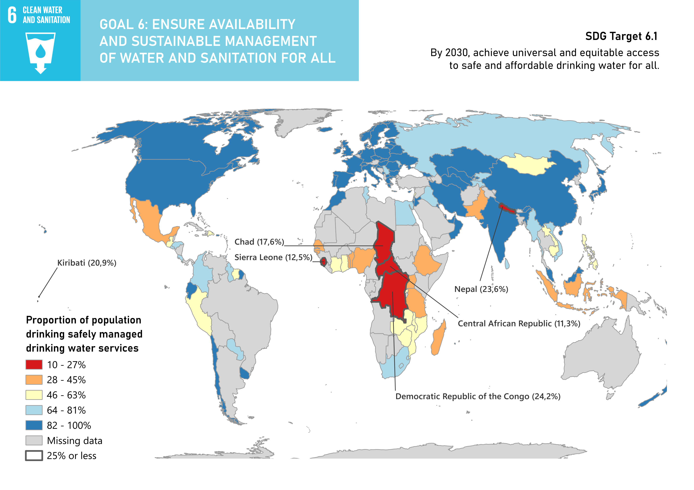

Choropleth Map
SDG 6: Clean Water and Sanitation
In this assignment, I assess the global access to safe drinking water services by creating a choropleth map. Data from UN Sustainable Development Goal 6, target 1 is used.

Project Overview
Theoretical Background
Sustainable Development Goals
The sustainable development goals (SGD's) were an important part of the 2030 Agenda for Sustainable Development,
adopted in 2015 by all United Nations Member States. There are 17 goals in total, providing a blueprint for peace and
prosperity for people and the planet, now and in the future.
Each goal has its own targets, which are quantified in indicators. This assignment looks into the sixth SDG, summarized as:
"Ensure availability and sustainable management of water and sanitation for all"
(United Nations, n.d.)
The target of interest is target 6.1, concerning the progress on drinking water.
'By 2030, achieve universal and equitable access to safe and affordable drinking water for all'
(UN-Water, n.d.)
To track progress towards the target, indicator 6.1.1 monitors the proportion of population using safely managed drinking
water services. Each country has one value for this indicator. The metadata can be found
here (United Nations Statistics Division, 2024).
Generally speaking, a choropleth map is a type of thematic map used to represent data through the shading or colouring of predefined geographic area (Geoapify, 2023).
Each area is coloured in proportion to the value of the variable being represented. You can recognise such a map by its distinct geographic regions, each filled evenly
with a colour. When a colour gradient is used, the darkest shades indicate the highest values.
A benefit of choropleth maps is that they are familiar to most users, making the data easy to understand. Besides this, the colour differences can highlight differences
and similarities across regions or hotspots. Thus, users can quickly detect patterns and trends within a dataset. For example, the map shown above clearly shows a group of
countries in Africa with very low percentages. Besides this, the geographic areas can be at any scale, and thus at many levels of analysis.
A disadvantage of choropleth maps can be the lack of detailed area-specific information. To work around this, the map above is made interactive, making it possible to see each
countries’ exact percentage. Such a map is also limited to one variable, so a combined analysis may be necessary. Misinterpretation is a large pitfall of the choropleth maps.
Big differences in the area sizes can lead to misinterpretations. Moreover, the abrupt change at the boundaries of countries can give false impressions. Gradual changes over
space (such as temperatures) are not visualised well using choropleth maps. Alternative maps may be used to visualise this spatial change (see assignment 2). Finally, as each
indicator is one value for an entire country, disparities within a country are not visualized, resulting in marginalized groups such as rural communities, low-income households, and
indigenous populations possibly not being represented well (University of Nebraska at Omaha, 2012).
Methods
The analysis was performed in QGIS 4.0.3. Location data was retrieved from the UN Geospatial Hub, and the attribute data
was downloaded from the Statistics Division of the UN website. Gathering all the necessary data, the data for 'ALLAREA'
(not URBAN or RURAL) was selected manually in Excel, thus cleaning the data. Next, the location data was added to a GIS project
as a vector layer, and the 'equal-area projection' was chosen. The location data and attribute data were joined through the fields
'GeoAreaCode' (from attribute data) and 'M49 Codes' (from location data). Normalization was not necessary as the 6.1.1 SDG indicator
is in percentages already. To display differences in the data using a colour ramp, the data needed to be classified. I used the 'pretty breaks'
mode, with 5 classes. The missing data was assigned a grey colour.
To highlight the countries with a deficiency in clean water access, I selected countries with a percentage value smaller or equal to 25%.
These countries were then labelled (as callouts) by country name and respective percentage, and given a thick border for increased visibility. In the end, I created a print layout with a title and legend.
Results & Findings
The choropleth map illustrates these proportions, using colours for different ranges of percentages. Thus, a dark shade of blue indicates a high proportion of
population using safely managed drinking water services, while a dark red indicates a low proportion. The map above depicts a population proportion with access
to safe drinking water lower than 25% in Chad, Sierra Leone, Kiribati, Nepal, Democratic republic of Congo and Central African Republic.
While the assignment instructed to take the highest percentages of the indicator, I found it more interesting to look at the lower percentages. As a lack of accessibility
to safe drinking water is a problem, a user of this map is able to identify the critical regions in need of improvement.
All in all, the resulting map reveals clear regional inequalities in access to safe water services, with higher accessibility in developed regions and lower accessibility in parts of Africa and Asia.
As visible in the interactive map, many countries are ‘missing data’. The problem was not the lack of data, however, but rather attribute data being lost during the joining progress.
The original data provided data for 190 countries, yet after joining only 163 countries remained. As an attempt to fix this, I performed a second joining, using M49 codes converted to integers this time,
which again provided 163 countries. However, with this second joining, different countries had data than during the original joining (not using integers). Thus, I decided to overlay the two joinings, which resulted in the map below.
Note that the countries were classified using 'pretty breaks' in both joins, and the second joining method was the top layer, thus a few countries that were included
in both joins have a different colour in the map below. Improvements need to be made to create a map that can be interpreted correctly.

Reflection
This was the very first map I made with QGIS! Most importantly, making this map introduced me to the QGIS software. Important skills that I acquired throughout the process were data cleaning, joining layers, selecting certain values within the data, labelling, and layout styling. Specifically the data joining was a challenge. The final map presented is was not completely accurate due to the individual classification of the joins. Despite the fact that this decreases the reliability of interpretation, making this map did show me the importance of the choice of variables used in joining attribute and location data.
References
United Nations. (n.d.). Goal 6: Ensure availability and sustainable management of water and sanitation for all. https://sdgs.un.org/goals/goal6UN-Water. (n.d.). Indicator 6.1.1: Proportion of population using safely managed drinking water services. https://sdg6data.org/en/indicator/6.1.1
United Nations Statistics Division. (2024). Metadata for Sustainable Development Goal indicator 6.1.1: Proportion of population using safely managed drinking water services. https://unstats.un.org/sdgs/metadata/files/Metadata-06-01-01.pdf
Geoapify. (2023, July 17). What is a choropleth map? Definition, examples & how to create one. https://www.geoapify.com/what-is-a-choropleth-map-definition-examples-how-to-create/
University of Nebraska at Omaha. (2012). Data visualization and cartography: A guide for data users.https://digitalcommons.unomaha.edu/cgi/viewcontent.cgi?article=1199&context=datausers
Project Details
- Course: GIS and Cartography
- Instructor: Britta Ricker
- Date: 15 June 2026
- Study Area: Global
Software & Tools
- QGIS
- Sustainable Development Goals
- Python